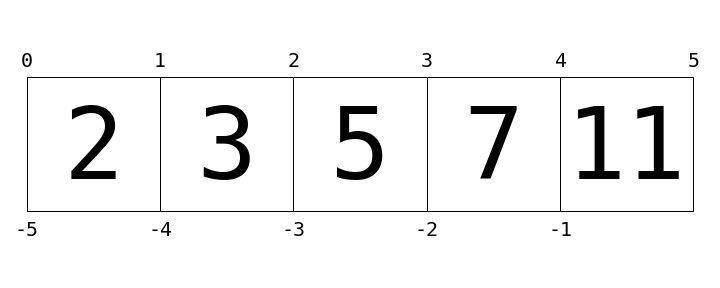

2.4 Built-In Data Structures#
Python also has several built-in compound types, which act as containers for other types.
Type Name |
Example |
Description |
|---|---|---|
|
|
Ordered collection |
|
|
Immutable ordered collection |
|
|
Unordered (key,value) mapping |
|
|
Unordered collection of unique values |
Note, round, square, and curly brackets have distinct meanings.
Lists#
Lists are the basic ordered and mutable data collection type in Python.
a = [2, 3, 5, 7]
Lists have a number of useful properties and methods available to them.
# Length of a list
len(a)
4
# Append a value to the end
a.append(11)
a
[2, 3, 5, 7, 11]
# Addition concatenates lists
a + [13, 17, 19]
[2, 3, 5, 7, 11, 13, 17, 19]
# sort() method sorts in-place
a = [2, 5, 1, 6, 3, 4]
a.sort()
a
[1, 2, 3, 4, 5, 6]
One of the powerful features of Python’s compound objects is that they can contain a mix of objects of any type.
a = [1, 'two', 3.14, [0, 3, 5]]
a
[1, 'two', 3.14, [0, 3, 5]]
This flexibility is a consequence of Python’s dynamic type system. Creating such a mixed sequence in a statically-typed language like C can be much more of a headache! We see that lists can even contain other lists as elements. Such type flexibility is an essential piece of what makes Python code relatively quick and easy to write.
List indexing and slicing#
Python provides access to elements in compound types through indexing for single elements, and slicing for multiple elements.
a = [2, 3, 5, 7, 11]
Python uses zero-based indexing, so we can access the first and second element in using the following syntax:
a[0]
2
a[1]
3
Elements at the end of the list can be accessed with negative numbers, starting from -1:
a[-1]
11
a[-2]
7
You can visualize this indexing scheme this way:

Here values in the list are represented by large numbers in the squares; list indices are represented by small numbers above and below.
In this case, L[2] returns 5, because that is the next value at index 2.
Where indexing is a means of fetching a single value from the list, slicing is a means of accessing multiple values in sub-lists. It uses a colon to indicate the start point (inclusive) and end point (non-inclusive) of the sub-array. For example, to get the first three elements of the list, we can write:
a[0:3]
[2, 3, 5]
we can equivalently write:
a[:3]
[2, 3, 5]
Similarly, if we leave out the last index, it defaults to the length of the list. Thus, the last three elements can be accessed as follows:
a[-3:]
[5, 7, 11]
Finally, it is possible to specify a third integer that represents the step size; for example, to select every second element of the list, we can write:
a[::2] # equivalent to a[0:len(a):2]
[2, 5, 11]
A particularly useful version of this is to specify a negative step, which will reverse the array:
a[::-1]
[11, 7, 5, 3, 2]
Both indexing and slicing can be used to set elements as well as access them. The syntax is as you would expect:
a[0] = 100
print(a)
[100, 3, 5, 7, 11]
a[1:3] = [55, 56]
print(a)
[100, 55, 56, 7, 11]
A very similar slicing syntax is also used in other data containers, such as NumPy arrays, as we will see in Day 2 sessions.
Tuples#
Tuples are in many ways similar to lists, but they are defined with parentheses and cannot be changed!
t = (1, 2, 3)
They can also be defined without any brackets at all:
t = 1, 2, 3
print(t)
(1, 2, 3)
Like the lists discussed before, tuples have a length, and individual elements can be extracted using square-bracket indexing:
len(t)
3
t[0]
1
The main distinguishing feature of tuples is that they are immutable: this means that once they are created, their size and contents cannot be changed:
Tuples are often used in a Python program; e.g. in functions that have multiple return values.
Dictionaries#
Dictionaries are extremely flexible mappings of keys to values, and form the basis of much of Python’s internal implementation.
They can be created via a comma-separated list of key:value pairs within curly braces:
numbers = {'one':1, 'two':2, 'three':3}
# or
numbers = dict(one=1, two=2, three=2)
Items are accessed and set via the indexing syntax used for lists and tuples, except here the index is not a zero-based order but valid key in the dictionary:
# Access a value via the key
numbers['two']
2
New items can be added to the dictionary using indexing as well:
# Set a new key:value pair
numbers['ninety'] = 90
print(numbers)
{'one': 1, 'two': 2, 'three': 2, 'ninety': 90}
Prior to version 3.6, dictionaries did not maintain any order for the input parameters. From Python 3.6 onwards, the standard dict maintains insertion order by default.
Sets#
The 4th basic data container is the set, which contains unordered collections of unique items.
They are defined much like lists and tuples, except they use the curly brackets of dictionaries.
They do not contain duplicate entries. Which means they are significantly faster than lists! http://stackoverflow.com/questions/2831212/python-sets-vs-lists
primes = {2, 3, 5, 7}
odds = {1, 3, 5, 7, 9}
a = {1, 1, 2}
a
{1, 2}
If you’re familiar with the mathematics of sets, you’ll be familiar with operations like the union, intersection, difference, symmetric difference, and others. Python’s sets have all of these operations built-in, via methods or operators. For each, we’ll show the two equivalent methods:
# union: items appearing in either
primes | odds # with an operator
primes.union(odds) # equivalently with a method
{1, 2, 3, 5, 7, 9}
# intersection: items appearing in both
primes & odds # with an operator
primes.intersection(odds) # equivalently with a method
{3, 5, 7}
# difference: items in primes but not in odds
primes - odds # with an operator
primes.difference(odds) # equivalently with a method
{2}
# symmetric difference: items appearing in only one set
primes ^ odds # with an operator
primes.symmetric_difference(odds) # equivalently with a method
{1, 2, 9}
More Specialized Data Structures#
Python contains several other data structures that you might find useful; these can generally be found in the built-in collections module.
The collections module is fully-documented in Python’s online documentation, and you can read more about the various objects available there.
In particular, I’ve found the following very useful on occasion:
collections.namedtuple: Like a tuple, but each value has a namecollections.defaultdict: Like a dictionary, but unspecified keys have a user-specified default valuecollections.OrderedDict: Like a dictionary, but the order of keys is maintained
References#
A Whirlwind Tour of Python by Jake VanderPlas (O’Reilly). Copyright 2016 O’Reilly Media, Inc., 978-1-491-96465-1
The python documentation of standard types